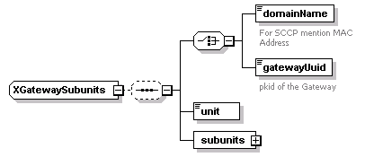
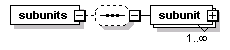
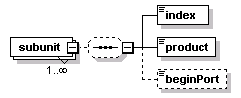

| diagram |  | ||
| namespace | http://www.cisco.com/AXL/API/10.5 | ||
| children | domainName gatewayUuid unit subunits | ||
| used by |
|
||
| source | <xsd:complexType name="XGatewaySubunits"> <xsd:sequence minOccurs="0"> <xsd:choice minOccurs="1"> <xsd:element name="domainName" type="xsd:string" nillable="false" minOccurs="1" maxOccurs="1"> <xsd:annotation> <xsd:documentation>For SCCP mention MAC Address</xsd:documentation> </xsd:annotation> </xsd:element> <xsd:element name="gatewayUuid" type="axlapi:XUUID" minOccurs="1" maxOccurs="1"> <xsd:annotation> <xsd:documentation>pkid of the Gateway</xsd:documentation> </xsd:annotation> </xsd:element> </xsd:choice> <xsd:element name="unit" type="axlapi:XInteger" default="0" nillable="false" minOccurs="1" maxOccurs="1"/> <xsd:element name="subunits" minOccurs="1" maxOccurs="1"> <xsd:complexType> <xsd:sequence minOccurs="0"> <xsd:element name="subunit" minOccurs="1" maxOccurs="unbounded"> <xsd:complexType> <xsd:sequence minOccurs="0"> <xsd:element name="index" type="axlapi:XInteger" nillable="true" minOccurs="1" maxOccurs="1"/> <xsd:element name="product" type="axlapi:XMGCPVic" nillable="true" minOccurs="1" maxOccurs="1"/> <xsd:element name="beginPort" type="axlapi:XInteger" nillable="true" minOccurs="0" maxOccurs="1"/> </xsd:sequence> </xsd:complexType> </xsd:element> </xsd:sequence> </xsd:complexType> </xsd:element> </xsd:sequence> </xsd:complexType> |
element XGatewaySubunits/domainName
| diagram | |||||
| type | xsd:string | ||||
| properties |
|
||||
| annotation |
|
||||
| source | <xsd:element name="domainName" type="xsd:string" nillable="false" minOccurs="1" maxOccurs="1"> <xsd:annotation> <xsd:documentation>For SCCP mention MAC Address</xsd:documentation> </xsd:annotation> </xsd:element> |
element XGatewaySubunits/gatewayUuid
| diagram | |||||||
| type | axlapi:XUUID | ||||||
| properties |
|
||||||
| facets |
|
||||||
| annotation |
|
||||||
| source | <xsd:element name="gatewayUuid" type="axlapi:XUUID" minOccurs="1" maxOccurs="1"> <xsd:annotation> <xsd:documentation>pkid of the Gateway</xsd:documentation> </xsd:annotation> </xsd:element> |
element XGatewaySubunits/unit
| diagram | |||||||
| type | axlapi:XInteger | ||||||
| properties |
|
||||||
| source | <xsd:element name="unit" type="axlapi:XInteger" default="0" nillable="false" minOccurs="1" maxOccurs="1"/> |
element XGatewaySubunits/subunits
| diagram |  | ||
| properties |
|
||
| children | subunit | ||
| source | <xsd:element name="subunits" minOccurs="1" maxOccurs="1"> <xsd:complexType> <xsd:sequence minOccurs="0"> <xsd:element name="subunit" minOccurs="1" maxOccurs="unbounded"> <xsd:complexType> <xsd:sequence minOccurs="0"> <xsd:element name="index" type="axlapi:XInteger" nillable="true" minOccurs="1" maxOccurs="1"/> <xsd:element name="product" type="axlapi:XMGCPVic" nillable="true" minOccurs="1" maxOccurs="1"/> <xsd:element name="beginPort" type="axlapi:XInteger" nillable="true" minOccurs="0" maxOccurs="1"/> </xsd:sequence> </xsd:complexType> </xsd:element> </xsd:sequence> </xsd:complexType> </xsd:element> |
element XGatewaySubunits/subunits/subunit
| diagram |  | ||||||
| properties |
|
||||||
| children | index product beginPort | ||||||
| source | <xsd:element name="subunit" minOccurs="1" maxOccurs="unbounded"> <xsd:complexType> <xsd:sequence minOccurs="0"> <xsd:element name="index" type="axlapi:XInteger" nillable="true" minOccurs="1" maxOccurs="1"/> <xsd:element name="product" type="axlapi:XMGCPVic" nillable="true" minOccurs="1" maxOccurs="1"/> <xsd:element name="beginPort" type="axlapi:XInteger" nillable="true" minOccurs="0" maxOccurs="1"/> </xsd:sequence> </xsd:complexType> </xsd:element> |
element XGatewaySubunits/subunits/subunit/index
| diagram | |||||
| type | axlapi:XInteger | ||||
| properties |
|
||||
| source | <xsd:element name="index" type="axlapi:XInteger" nillable="true" minOccurs="1" maxOccurs="1"/> |
element XGatewaySubunits/subunits/subunit/product
| diagram |  |
||||
| type | axlapi:XMGCPVic | ||||
| properties |
|
||||
| source | <xsd:element name="product" type="axlapi:XMGCPVic" nillable="true" minOccurs="1" maxOccurs="1"/> |
element XGatewaySubunits/subunits/subunit/beginPort
| diagram | |||||||||
| type | axlapi:XInteger | ||||||||
| properties |
|
||||||||
| source | <xsd:element name="beginPort" type="axlapi:XInteger" nillable="true" minOccurs="0" maxOccurs="1"/> |
XML Schema documentation generated by XMLSpy Schema Editor http://www.altova.com/xmlspy